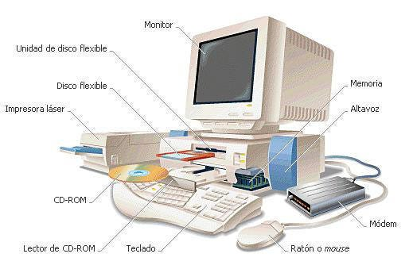
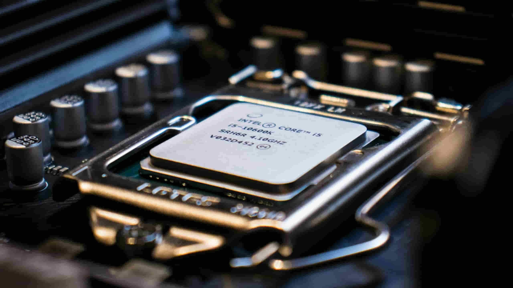
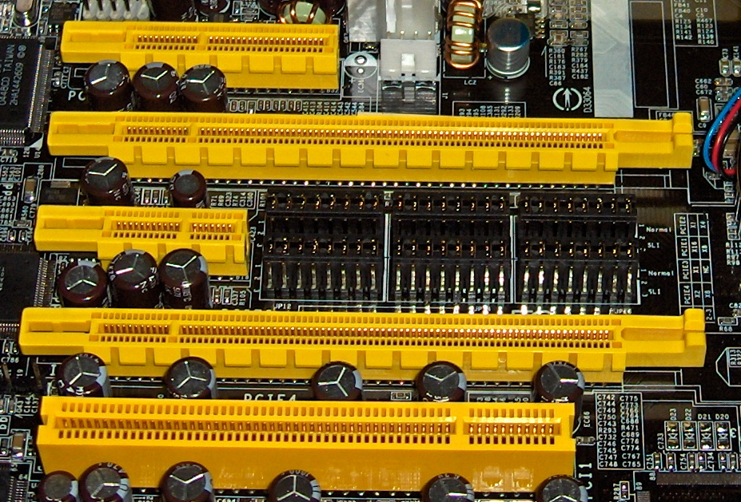

La arquitectura de cómputo permite comprender el funcionamiento de los sistemas computacionales desde el procesador, la memoria, los buses y los dispositivos de entrada/salida. Estos conocimientos son esenciales para analizar el rendimiento, la capacidad y las limitaciones de una computadora.

Los modelos de arquitectura describen la forma en que una computadora organiza sus componentes principales para procesar información.
Las arquitecturas clásicas se basan en modelos tradicionales como Von Neumann, donde la CPU, la memoria y los dispositivos de entrada/salida trabajan conectados mediante buses. En este modelo, los datos e instrucciones suelen almacenarse en la misma memoria.
Las arquitecturas segmentadas dividen la ejecución de instrucciones en etapas, como búsqueda, decodificación, ejecución y almacenamiento. Esto permite que varias instrucciones avancen al mismo tiempo en diferentes fases, mejorando el rendimiento del procesador.
Las arquitecturas de multiprocesamiento utilizan dos o más procesadores o núcleos para realizar tareas de forma simultánea. Su objetivo es aumentar la velocidad de procesamiento y permitir que el sistema maneje varios procesos al mismo tiempo.
El análisis de los componentes permite comprender cómo cada parte del sistema participa en el procesamiento, almacenamiento y transferencia de información.

La CPU es el componente principal encargado de interpretar y ejecutar instrucciones. Coordina las operaciones del sistema, realiza cálculos y controla el flujo de información entre los demás componentes.
Se refiere a la forma en que está diseñado internamente el procesador, incluyendo su conjunto de instrucciones, registros, forma de manejar datos y comunicación con otros componentes.
Existen diferentes tipos de CPU según su uso y diseño, como procesadores de propósito general, microcontroladores, procesadores multinúcleo y procesadores especializados.
Entre sus características principales están la velocidad de reloj, número de núcleos, memoria caché, tamaño de palabra, consumo energético y capacidad para ejecutar instrucciones.
La CPU trabaja mediante la ALU, la unidad de control, los registros y los buses internos. La ALU realiza operaciones aritméticas y lógicas; la unidad de control dirige las instrucciones; los registros almacenan datos temporales; y los buses internos transportan información dentro del procesador.
La memoria almacena datos e instrucciones que la computadora necesita para funcionar. Puede ser temporal, permanente, rápida o de gran capacidad, según su función dentro del sistema.
El manejo de memoria consiste en organizar, asignar y liberar espacios donde se guardan datos e instrucciones. Permite que los programas se ejecuten correctamente y que el sistema administre sus recursos.
Es la memoria principal del sistema, normalmente conocida como RAM. Está formada por circuitos semiconductores y almacena temporalmente los datos e instrucciones que la CPU necesita mientras el equipo está encendido.
La memoria caché es una memoria pequeña y muy rápida ubicada cerca o dentro del procesador. Guarda datos e instrucciones de uso frecuente para reducir el tiempo de acceso y mejorar el rendimiento.
La entrada/salida permite que la computadora se comunique con dispositivos externos como teclado, mouse, impresoras, sensores, pantallas, discos y redes.
Son componentes que permiten la comunicación entre la CPU y los dispositivos periféricos. Adaptan señales, controlan transferencias y ayudan a coordinar el intercambio de datos.
En este método, la CPU controla directamente la transferencia de datos con el dispositivo. El procesador revisa constantemente si el dispositivo está listo, lo que puede consumir tiempo de procesamiento.
El dispositivo avisa a la CPU cuando necesita atención mediante una interrupción. Así, el procesador no tiene que revisar constantemente el estado del dispositivo y puede realizar otras tareas mientras espera.
El acceso directo a memoria, o DMA, permite que ciertos dispositivos transfieran datos directamente hacia o desde la memoria principal sin que la CPU participe en cada paso de la transferencia.
Son mecanismos especializados que administran operaciones de entrada/salida de forma más independiente. Ayudan a liberar a la CPU de tareas repetitivas relacionadas con la transferencia de datos.

Los buses son los canales de comunicación que transportan información entre los componentes de la computadora. Las interrupciones permiten que el sistema responda a eventos importantes sin detener completamente su funcionamiento.
Los principales tipos son el bus de datos, que transporta información; el bus de direcciones, que indica ubicaciones de memoria; y el bus de control, que coordina señales de operación.
La estructura de un bus incluye líneas físicas o rutas de comunicación, protocolos de transferencia y señales que permiten mover datos entre CPU, memoria y dispositivos.
La jerarquía de buses organiza distintos niveles de comunicación según velocidad y función. Por ejemplo, buses internos del procesador, buses de memoria y buses de expansión para periféricos.
Una interrupción es una señal que detiene temporalmente la ejecución normal de la CPU para atender un evento urgente, como una entrada del usuario, una operación de hardware o una condición del sistema.
Al finalizar esta unidad, podrás identificar los principales modelos de arquitectura de computadoras, explicar el funcionamiento básico de la CPU, diferenciar los tipos de memoria, comprender los métodos de entrada/salida, reconocer la función de los buses y entender el papel de las interrupciones en un sistema computacional.
Volver arribaInformacion sobre el contenido visto en la materia
Carpeta raíz: pdfs
Formato: PDF
Acceso: descarga directa
© Angeline Jaretzi Rojas de la Rosa. Arquitectura de las computadoras.